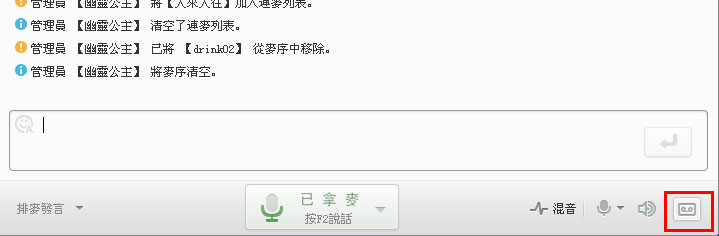

2.什么是混音模式？
混音模式是将电脑发出的声音与传入麦克风的声音混合，分享给频道成员的一种模式。
3.怎样更改频道音质模式？
频道音质模式分为两种，聊天模式和娱乐模式。如需更改，请点击所在频道的名称，按右键点选'检视/编辑'，在选项'基本资料'里更改频道模式。自由发言和管理员发言都是聊天模式，排麦发言则是娱乐模式(高音质)
4.频道发言模式有哪几种？
自由发言：频道的所有会员都可以使用麦克风讲话以及文字聊天，自由无限。
管理员发言：语音群创建者或语音群管理员.频道管理员可以指挥讲话秩序。
其他会员不可以使用麦克风讲话,但可以进行文字聊天。
排麦发言：所在的频道会员需要排队轮流讲话或哈拉欢唱等。
5.怎么更改频道发言模式？
如果你具备相应的管理权限，可在当前频道视窗的左下方更改频道发言模式，或者检视/编辑该频道的基本资料，选择频道模式进行更改。
6.怎么更改个人通话设置？
您可以在当前频道的聊天区域上方点击"系统设定"，然后在弹出界面中的"语音设定"里进行设定。
如果您选择按键发话，说话时按住设定好的热键，频道内的成员就能听到您的声音。如果您觉得这种方式不方便，可以点击切换为'音量感应'，在您说话时我们的程式就会自动捕捉您的声音。
7.听不到别人讲话/别人听不到我讲话？
假如您听不到别人讲话，请按以下步骤检查问题：
1) 首先检查自己的耳麦是否插好；
2) 耳麦是否正常可以使用：
可以使用RC系统中的语音检测功能进行检测。请点视窗左上方的RC语音-->系统设定-->音频设定-->语音设备调节设定。
3) 检查选择的设备是否正确：
A) 如果您听不到声音，请检查输出装置：点击RC视窗左上角的RC语音--系统设定--音频设定，更改输出装置。
B) 如果别人听不到您的声音，则需要更改输入装置。
8.为什么录音功能无法储存档案？
有两种方式可以修正：
1) 直接在设定更改档案储存路径到桌面；
2) 使用管理员身份登入电脑系统。
9.语音有杂讯怎么办？
1) 检查耳麦是否插好: 有些电脑的耳麦插头比较容易松动，请使用者自行调整。
2) 检查使用别的聊天软体是否也有杂讯: 有些音效卡和耳麦本身就会有很多杂讯，如果检查到别的软体也会有杂讯，就得请电脑工程师查看问题。
3) 网路不稳定: 建议在使用RC语音的时候不要下载东西和开PPS，因为这会很占网路。
10.Win7作业系统下开启RC时，其他系统音效声音会被调降该怎么办？
点击RC视窗左上角的「RC语音」-> 「系统设定」->「一般设定」，勾选「禁止Windows自动调节音量」（仅针对windows7）。
或选择「控制台」 -> 「声音」 -> 「通讯」，在选项里，选择第四项「不进行动作」。
11.如何使用录音功能？
在频道内用滑鼠点击聊天视窗中的'录音'，录音即开始，如要结束录音，只需再点一下'录音'，录音结束的同时程式会自动开启存放录音档案的资料夹。

12.如何更改录音文件的存放路径？
点击RC视窗左上角的'系统设定'，然后在'更改录音存放路径'中进行更改。
13.为什么我讲话时会产生回音呢？
回音一般都是和您聊天的朋友那边的问题，产生的原因有以下几个：
1) 对方使用了喇叭，喇叭会使您听到回音．所以使用ＲＣ尽量使用耳麦。
2) 对方选了系统内放，系统内放也会使您听到回音。
3) 对方的耳麦或音效卡质量不好，现在市面上有些品质比较差的耳麦的线路会产生干扰， 这样也会产生回音。
14.什么是回音消除？
回音消除是通过信号处理技术，消除掉使用喇叭或耳麦干扰等因素所产生的回音，只在自由模式、指挥模式有效。
回音消除功能可能会对K歌用户造成影响。若给您的使用带来不便，可在「系统设定」->「语音通话设定」取消「回音消除」功能。
15.如何手动调节音量感应条？
拖动感应条指针，指针往左拖动灵敏度越高，声音的识别度越高，对方听到您的声音会更连贯，但也会造成不必要的噪音传输。
16.如何将量感应条调到合适的位置?
只需保证在您没说话或者没有做出特殊响动的时候，音量跳动值刚好保持在指针的左边显示为红；而在你说话的时候，音量跳动值能保持超过指针出现绿色部份即可。